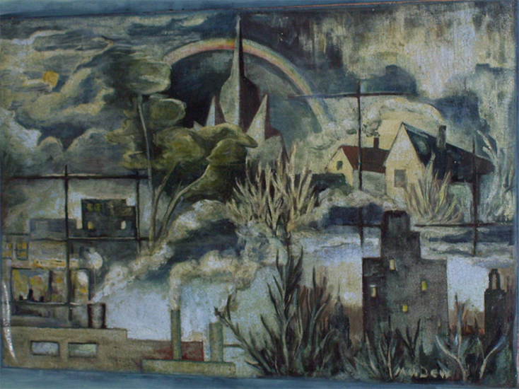

In 1951 and 1952, I commuted from Belle Plaine to take evening classes in drawing and painting from Kenneth Lougheed assisted by Art Mckay at Regina College. I often painted the waiting room of the train station. I also lived on McIntyre Street near the Museum. My environment has always inspired my to paint.
Back to Gallery | Back to Main
Copyright 2008 Joyce Deutscher, all images are the property of Joyce Deutscher. Coded in 2008 by Nicolas Methot.
Updated 2010 by Scott Mepham